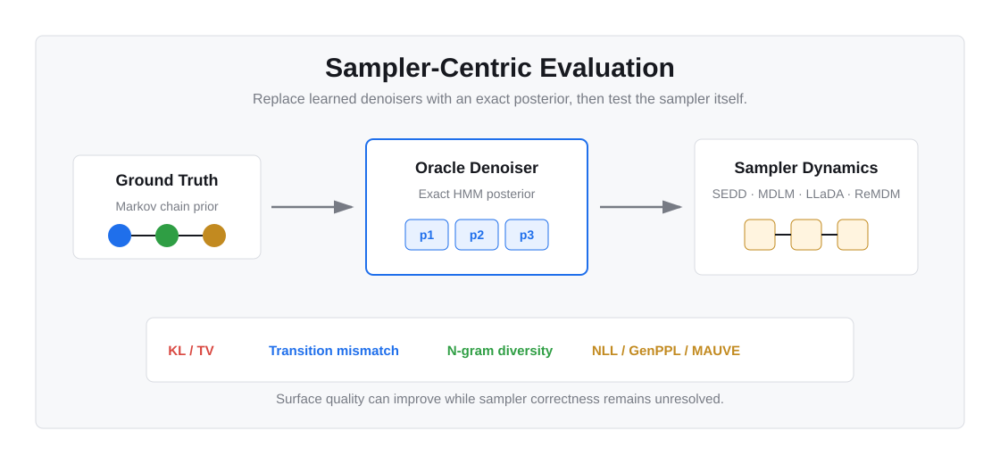

arXiv preprint 2602.19619
Is Your Diffusion Sampler Actually Correct?
A Sampler-Centric Evaluation of Discrete Diffusion Language Models
University of California, Riverside

Abstract
Sampler behavior matters, even with an oracle denoiser.
Discrete diffusion language models provide a fast and flexible alternative to autoregressive models through iterative denoising with parallel updates. Their evaluation is challenging because existing metrics often conflate denoiser approximation error with sampler-induced error from the sampling dynamics.
This work introduces a sampler-centric oracle framework that replaces learned denoisers with an exact Hidden Markov Model posterior derived from a ground-truth Markov chain. The setup isolates sampler-induced error in a controlled setting and shows that few-step discrete diffusion samplers are not distributionally correct even under an oracle denoiser.
Motivation
Final-sample metrics can hide the source of error.
Learned-denoiser approximation and sampler-induced bias can both affect final samples, so metrics such as NLL, GenPPL, and MAUVE do not reveal which component is responsible.
The learned denoiser is replaced by an exact posterior, leaving the sampler dynamics as the source of distributional deviation.
Method
A controlled framework for sampler-centric evaluation.
The data distribution is defined as a discrete Markov chain. Under forward masking, exact posteriors can be computed with Hidden Markov Model inference, enabling method-consistent oracle versions of samplers such as SEDD, MDLM/LLaDA, and ReMDM.
sampler/oracle_hmm_posterior.py
sampler/metrics_full.py
exp/run_all.sh
Results
Correct-looking samples are not always correct samples.
Transition-level mismatch remains substantial at small step counts, even with exact denoising.
Distributional error vanishes only as diffusion steps approach sequence length.
Better NLL, GenPPL, or MAUVE does not necessarily imply sampler correctness.
Documentation
Reproduce the sampler evaluations.
The repository includes ground-truth construction, sampler runners, and unified evaluation scripts for text8 and OpenWebText-style experiments.
python -m venv .venv
source .venv/bin/activate
pip install -r requirements.txt
bash exp/build_gt.sh
bash exp/run_all.sh text8 0 512For the complete workflow, see README.md and TUTORIAL.md.
Citation
Cite this work.
@article{tang2026your,
title={Is Your Diffusion Sampler Actually Correct? A Sampler-Centric Evaluation of Discrete Diffusion Language Models},
author={Tang, Luhan and Yu, Longxuan and Zhang, Shaorong and Steeg, Greg Ver},
journal={arXiv preprint arXiv:2602.19619},
year={2026}
}